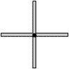
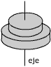

En los vértices de un triángulo rectángulo ABC están colocadas sendas masas puntuales mA = 50 g, mB = 30 g, mC = 40 g. Calcula el momento de inercia del sistema respecto a:
a) Un eje perpendicular al plano del triángulo y que pasa por B
b) Un eje que coincide con el lado AC
Datos: (AB = 10, AC = 8 , BC = 6) cm
En los vértices de un rectángulo de dimensiones a, b (a > b) están colocadas masas de valor m. Halla el momento de inercia del conjunto respecto a:
a) Un eje que pasa por el lado mayor
b) Un eje que pasa por el lado menor
c) Un eje que coincide con la diagonal
a) Calcula el momento de inercia de una varilla (Masa m, longitud L) respecto a un eje perpendicular a distancia L/4 de un extremo
b) Calcula el momento de inercia de un disco homogéneo (Masa m, radio R) respecto a un eje perpendicular por su extremo
c) El momento de inercia de un cuerpo de masa 2 kg respecto a un eje que pasa a 0.5 m del c.d.m vale 0.4 kg·m2. Calcula el momento de inercia respecto a un eje paralelo situado 0.3 m más lejos del c.d.m
 |
Calcular el momento de inercia del conjunto respecto al eje indicado Las varillas son iguales. Masa: m Longitud: L |
 |
Calcular el momento de inercia del conjunto respecto al eje indicado Las varillas son iguales. Masa: m Longitud: L |
 |
Calcular el momento de inercia del conjunto respecto al eje indicado Cilindros Masas: m1, m2 Radios: R1 , R2 |
 |
Calcular el momento de inercia del conjunto respecto al eje indicado Disco: Masa: m1
Radio: R |
 |
Calcular el momento de inercia del conjunto respecto al eje indicado Los cilindros son iguales: Masa: m Radio: R |
Calcular el momento de inercia del conjunto respecto al eje indicado Las esferas son iguales: Masa: m
Radio: R |